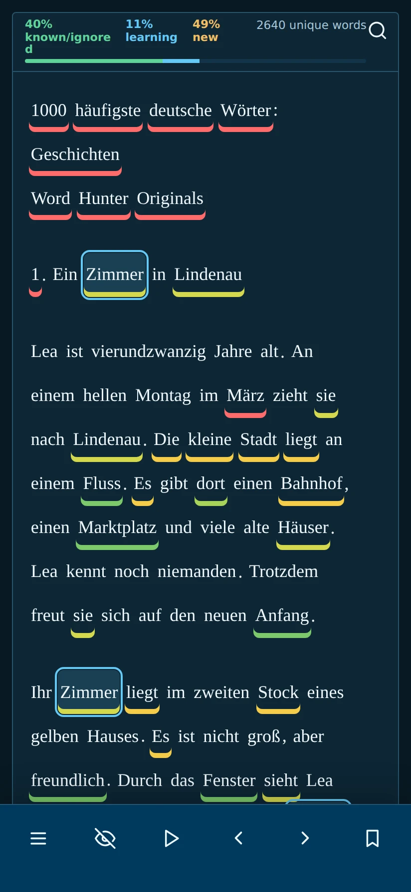
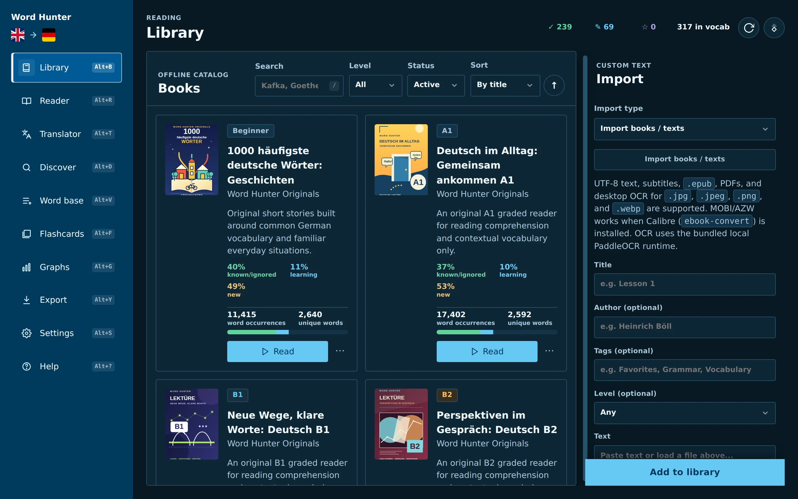
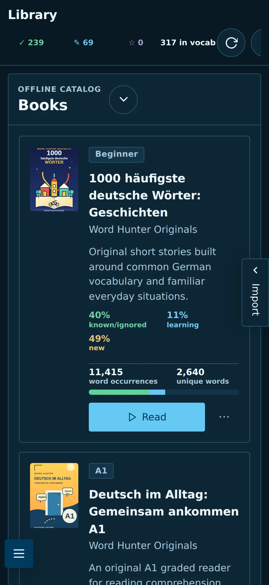
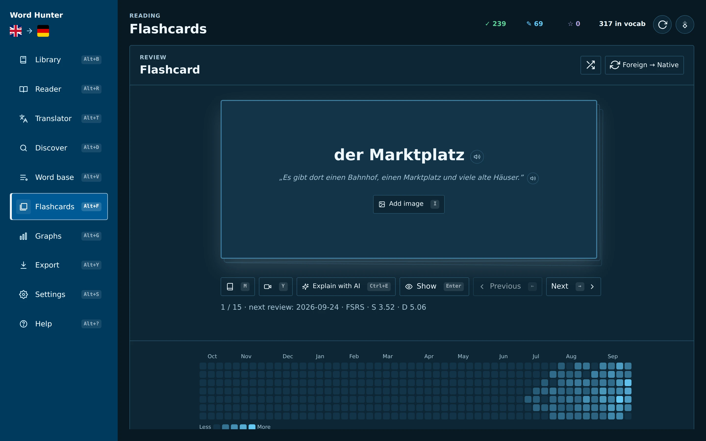
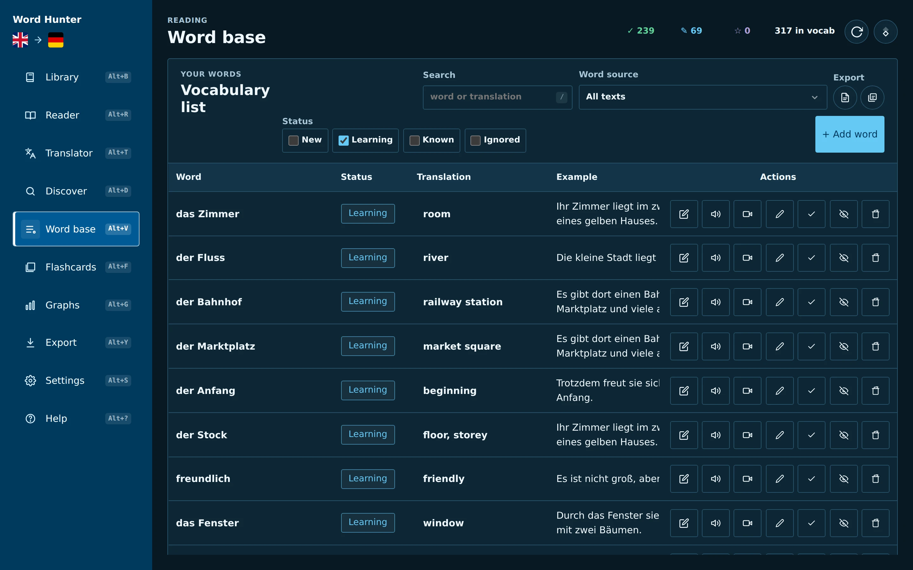
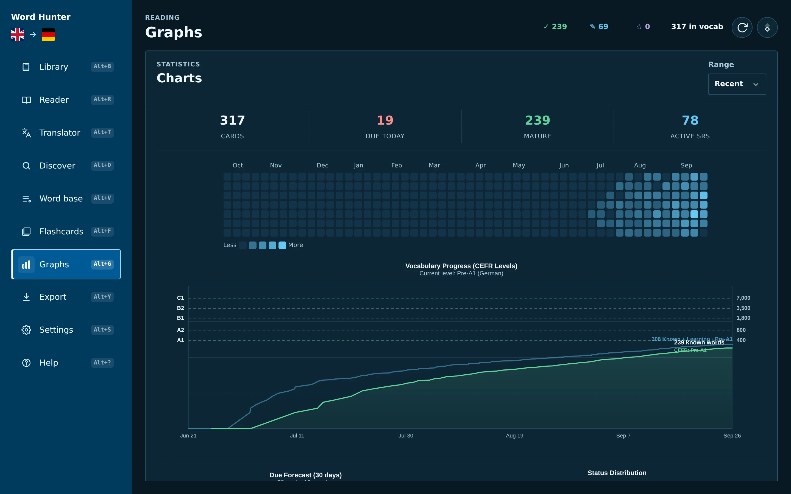
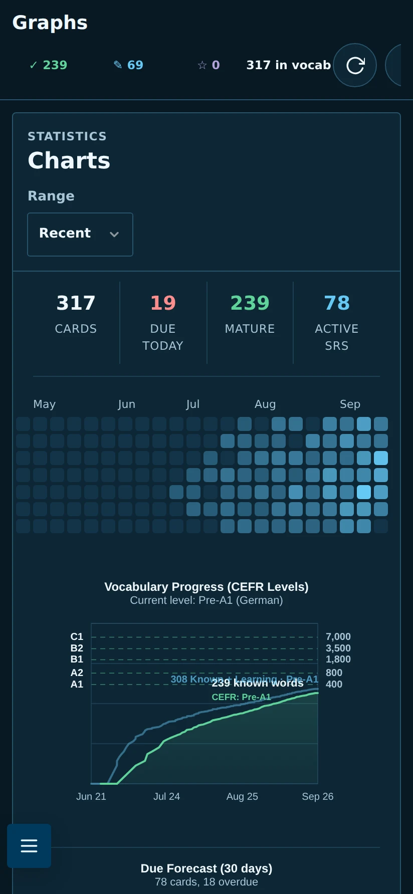

A reader that knows your words
Every word is colour-coded by how well you know it. Click one to translate it, hear it, look it up in a dictionary or save it – without losing your place.
Word Hunter is a free reader and vocabulary trainer. Open a book, an article or subtitles, click the words you don’t know, and it keeps each one with its sentence – then brings it back for review right before you would forget it.
How it works
Collecting words is easy. Word Hunter builds the way back to them, so the words you meet while reading become words you actually know.
A novel, a news article, an EPUB, a scanned PDF, film subtitles or a free public-domain classic. Every word is marked as new, learning or known.
Save a translation, article, note or picture. The sentence you found it in is kept with it, so every word comes with its own context.
Flashcards and in-text prompts ask for the meaning first. You check yourself against the original sentence and rate how well you knew it.
Spaced repetition (FSRS or SM-2) schedules each word. Hard words return soon, familiar ones wait longer – no wasted reviews.
Features
No subscription and no cloud lock-in. Your books and words live on your device.
Every word is colour-coded by how well you know it. Click one to translate it, hear it, look it up in a dictionary or save it – without losing your place.
Paste text or open EPUB, PDF, TXT and Markdown files, SRT, VTT and ASS subtitles, web articles and YouTube captions. Browse Project Gutenberg, Wikipedia and Wikinews in the app.
Desktop packages bundle the OCR engine and models. Read the original page with selectable words laid over it, or switch to a clean text view. Nothing is uploaded.
Review due words with FSRS or SM-2, keyboard shortcuts, pronunciation, reverse cards and shuffling. On reverse cards the answer is masked inside the example sentence.
Search, filter, edit and clean up every saved word with its status, translation, examples and source. Export to Anki, or back everything up in one ZIP file.
A review heatmap, a 30-day due forecast and vocabulary growth mapped to CEFR levels show how far you’ve come and what’s coming up.
Import on your computer, then read and review on the go. A transfer package carries books, page images, words, settings and progress between devices.
Light and dark themes, adjustable fonts and sizes, the dyslexia-friendly Atkinson Hyperlegible and OpenDyslexic fonts, and read-aloud that keeps the spoken word in view.
Ask a local model (llama.cpp, LM Studio, Ollama) or any OpenAI-compatible service you choose to explain a word in its sentence. Off until you turn it on.
Tour
The same library, words and progress on your computer and in Word Hunter Pocket.
Underlines show what’s new, what you’re learning and what you already know. Click a word to see its translation, your note and the sentences you saved it from.

Your books, articles, subtitles and scanned PDFs in one place, each with its own progress. Built-in stories and A1–B2 course books get you started in every language.


Review what’s due with the original sentence as a hint. Reveal, rate and move on – with the keyboard on desktop or a tap on your phone.

Every word you save, with its status, translation and example. Filter by book or status, fix a typo without losing progress, and export whenever you like.

See your review activity, what’s due over the next 30 days and how your vocabulary grows towards the next CEFR level.


Why it works
These studies look at learning methods, not at Word Hunter itself. They show why context, recall, repetition and spacing are worth combining.
“Reading the words in either the retrieval or inference context increased retention.”
“Taking a memory test not only assesses what one knows, but also enhances later retention.”
“The optimal gap increased as test delay increased.”
“Results showed that there was a medium effect (r = .34) of repetition on incidental vocabulary learning.”
No method works on autopilot: pick texts you can mostly understand, save the words that matter to you, and try to recall before you check.
Languages
Each language gets its own library, word base, review queue and progress, with original stories and A1–B2 course books built in. The Other profile works with any language you set up.
The app itself is available in English, German, Spanish, French, Italian, Polish, Ukrainian, Russian, Japanese and Chinese.
What’s new
Download
Free on every platform. All downloads come straight from the official GitHub release.
Windows 10 and 11, 64-bit
Or use a package manager:
winget install Ironship.WordHunterscoop bucket add wordhunter https://github.com/Ironship/scoop-wordhunterscoop install wordhunter/wordhunterApple Silicon (M1 or newer)
The app is not notarised by Apple. Drag it to Applications and try to open it once, then choose Open Anyway in System Settings → Privacy & Security.
Intel Macs are not supported.
x86_64 with WebKitGTK 4.1
Or use the Homebrew tap:
brew install --cask Ironship/wordhunter/wordhunterUbuntu 22.04, Debian 12, Fedora 38 or newer. Local OCR is included.
Word Hunter Pocket, Android 8 or newer
Your phone may ask you to allow installs from your browser. An F‑Droid listing has been requested and is waiting for review.
Older versions are on the releases page. Package recipes for Chocolatey, Snap, AUR and Nixpkgs are in the repository but not published in those stores yet.
FAQ
Something else? Ask on GitHub.
Yes. It is open-source software under the GNU AGPL-3.0, with no subscription, no in-app purchases and no ads.
No account at all. Reading, saving words, flashcards and desktop OCR work offline. The internet is used only for online features you choose, such as the book catalog, online translation, dictionaries or online speech.
On your device. Your books, words, settings and progress never go to a Word Hunter server – there isn’t one. You can export a full backup as a ZIP file at any time. See the privacy policy.
Open Export, save a transfer package and import it on the other device. It carries books, page images, words, settings and reading progress, and merges with what is already there.
Yes. Export your words to Anki as a TSV file, or import an Anki TSV file into Word Hunter.
Not at the moment. Word Hunter runs on Windows, macOS (Apple Silicon), Linux and Android.